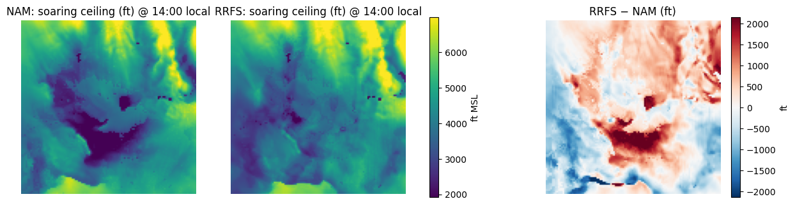
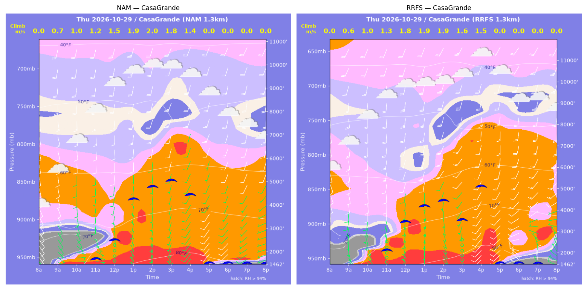
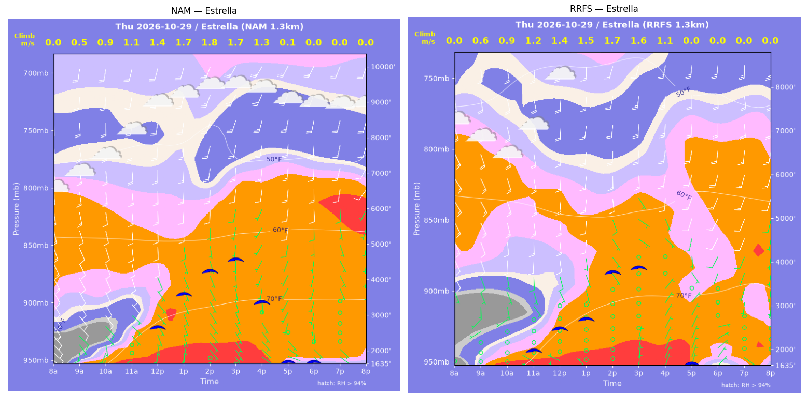
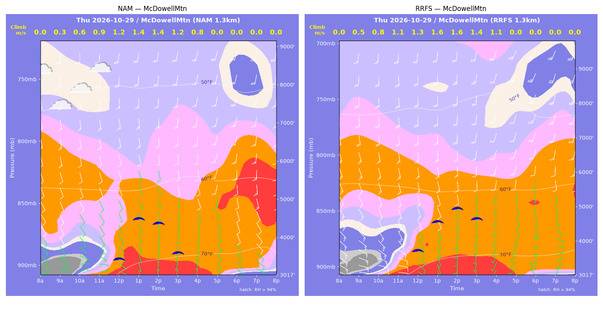
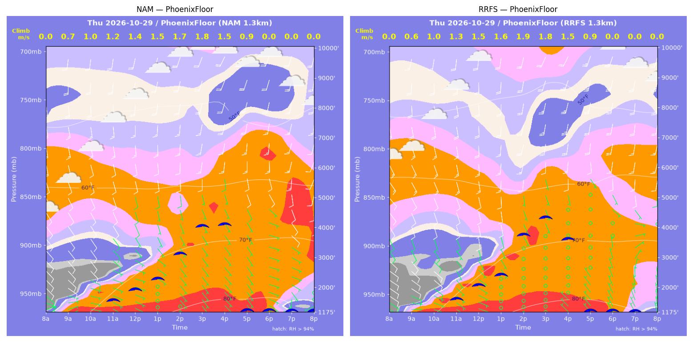
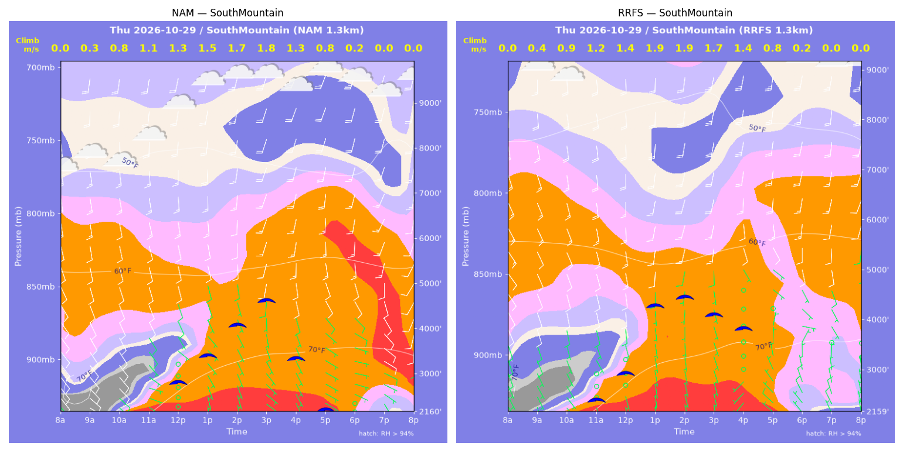
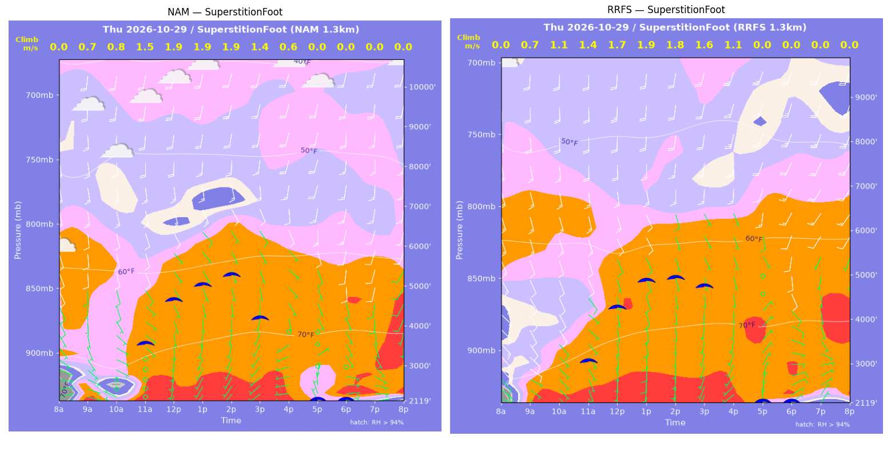
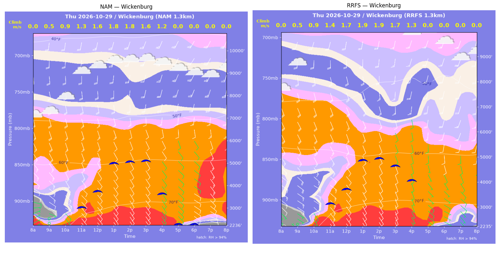

../runs/ab-phoenix-nam — model nam, cycle 2026-10-28 18z, dx 1.3333333740234374 km, 13 hours, grid 114×114../runs/ab-phoenix-rrfs — model rrfs, cycle 2026-10-28 18z, dx 1.3333333740234374 km, 13 hours, grid 114×114Grids identical; afternoon = 12:00–17:59 local (UTC-7). Δ = RRFS − NAM.
| Site | terrain ft | BL top (AGL) med|Δ| / bias (ft) | w* med|Δ| / bias (fpm) | Soaring ceiling med|Δ| / bias (ft) | BL wind speed med|Δ| / bias (kt) | BL wind dir med|Δ| / bias (deg) | 2 m temperature med|Δ| / bias (F) | Sfc LCL (AGL) med|Δ| / bias (ft) | Sensible heat flux med|Δ| / bias (W/m2) |
|---|---|---|---|---|---|---|---|---|---|
| PhoenixFloor | 1176 | 412 / +196 | 14 / +13 | 224 / +124 | 2 / -0 | 15 / +5 | 0 / +0 | 767 / +772 | 10 / +10 |
| SouthMountain | 2160 | 642 / +172 | 20 / +19 | 426 / +226 | 4 / +0 | 21 / -13 | 0 / +0 | 500 / +455 | 24 / +21 |
| SuperstitionFoot | 2119 | 351 / +372 | 23 / +16 | 234 / -48 | 3 / +4 | 18 / +18 | 1 / +1 | 1035 / +1133 | 17 / +2 |
| Estrella | 1636 | 999 / -686 | 16 / -18 | 575 / -644 | 2 / +0 | 12 / -28 | 1 / -1 | 204 / -219 | 12 / +13 |
| Wickenburg | 2237 | 332 / -656 | 19 / +14 | 111 / -44 | 2 / -0 | 8 / -8 | 0 / +0 | 747 / +993 | 38 / +32 |
| CasaGrande | 1462 | 749 / +11 | 9 / +3 | 488 / -45 | 5 / +2 | 16 / +5 | 1 / +1 | 495 / +746 | 5 / +5 |
| McDowellMtn | 3017 | 348 / +281 | 40 / +36 | 172 / +325 | 2 / +1 | 8 / +16 | 1 / +1 | 1024 / +1061 | 46 / +39 |
| Metric | n | median |Δ| | p90 |Δ| | bias |
|---|---|---|---|---|
| BL top (AGL) (ft) | 42 | 456 | 1301 | -44 |
| w* (fpm) | 42 | 18 | 50 | +12 |
| Soaring ceiling (ft) | 42 | 308 | 879 | -15 |
| BL wind speed (kt) | 42 | 2 | 6 | +1 |
| BL wind dir (deg) | 42 | 12 | 46 | -1 |
| 2 m temperature (F) | 42 | 1 | 1 | +0 |
| Sfc LCL (AGL) (ft) | 42 | 680 | 1658 | +706 |
| Sensible heat flux (W/m2) | 42 | 15 | 47 | +17 |
diffmap_tol.png| local | BL top NAM/RRFS ft | w* NAM/RRFS fpm | ceiling NAM/RRFS ft | BL wind NAM/RRFS | T2 NAM/RRFS F | HFX NAM/RRFS |
|---|---|---|---|---|---|---|
| 08:00 | 0 / 0 | 0 / 0 | 1176 / 1175 | 3kt@057 / 5kt@120 | 63 / 62 | 0 / 0 |
| 09:00 | 724 / 499 | 139 / 125 | 1176 / 1175 | 10kt@124 / 8kt@113 | 68 / 67 | 58 / 60 |
| 10:00 | 1219 / 933 | 207 / 190 | 1176 / 1175 | 10kt@135 / 7kt@125 | 72 / 71 | 113 / 115 |
| 11:00 | 1443 / 1423 | 239 / 246 | 1621 / 1674 | 7kt@112 / 6kt@151 | 75 / 75 | 148 / 164 |
| 12:00 | 1787 / 1924 | 269 / 287 | 1954 / 2108 | 5kt@119 / 7kt@166 | 78 / 78 | 170 / 193 |
| 13:00 | 2238 / 2361 | 293 / 308 | 2289 / 2420 | 7kt@156 / 8kt@167 | 81 / 81 | 177 / 195 |
| 14:00 | 3381 / 4199 | 330 / 365 | 3078 / 3722 | 7kt@165 / 13kt@184 | 83 / 83 | 168 / 183 |
| 15:00 | 4777 / 5145 | 348 / 361 | 3982 / 4275 | 13kt@189 / 12kt@181 | 84 / 84 | 140 / 145 |
| 16:00 | 5459 / 4733 | 305 / 294 | 4026 / 3547 | 17kt@192 / 15kt@185 | 84 / 84 | 83 / 86 |
| 17:00 | 3478 / 3934 | 174 / 178 | 1176 / 1175 | 8kt@152 / 2kt@121 | 84 / 83 | 24 / 23 |
| 18:00 | 3459 / 1403 | 0 / 0 | 1176 / 1175 | 7kt@132 / 5kt@344 | 83 / 82 | -0 / -2 |
| 19:00 | 278 / 686 | 0 / 0 | 1176 / 1175 | 4kt@224 / 7kt@346 | 81 / 80 | -1 / -3 |
| 20:00 | 85 / 504 | 0 / 0 | 1176 / 1175 | 3kt@246 / 7kt@349 | 79 / 78 | -0 / -2 |
| local | BL top NAM/RRFS ft | w* NAM/RRFS fpm | ceiling NAM/RRFS ft | BL wind NAM/RRFS | T2 NAM/RRFS F | HFX NAM/RRFS |
|---|---|---|---|---|---|---|
| 08:00 | 0 / 0 | 0 / 0 | 2160 / 2160 | 7kt@133 / 6kt@141 | 63 / 62 | 0 / 0 |
| 09:00 | 112 / 257 | 68 / 78 | 2160 / 2160 | 12kt@140 / 3kt@135 | 68 / 69 | 44 / 29 |
| 10:00 | 498 / 647 | 159 / 173 | 2160 / 2160 | 9kt@129 / 6kt@141 | 69 / 70 | 125 / 124 |
| 11:00 | 1066 / 1171 | 215 / 232 | 2160 / 2464 | 6kt@130 / 4kt@150 | 71 / 72 | 145 / 167 |
| 12:00 | 1652 / 1713 | 262 / 283 | 2842 / 2972 | 7kt@149 / 7kt@175 | 74 / 75 | 169 / 206 |
| 13:00 | 2382 / 3460 | 305 / 371 | 3401 / 4281 | 7kt@166 / 12kt@191 | 76 / 77 | 186 / 231 |
| 14:00 | 3286 / 3668 | 341 / 377 | 4060 / 4431 | 9kt@180 / 14kt@198 | 78 / 78 | 189 / 229 |
| 15:00 | 4106 / 3388 | 349 / 330 | 4575 / 4070 | 16kt@200 / 12kt@188 | 79 / 79 | 162 / 167 |
| 16:00 | 2754 / 3552 | 262 / 276 | 3302 / 3783 | 12kt@174 / 12kt@175 | 79 / 79 | 103 / 93 |
| 17:00 | 2071 / 1504 | 165 / 163 | 2160 / 2160 | 8kt@139 / 4kt@360 | 78 / 77 | 34 / 45 |
| 18:00 | 263 / 228 | 35 / 45 | 2160 / 2160 | 3kt@094 / 6kt@311 | 78 / 76 | 3 / 6 |
| 19:00 | 859 / 629 | 0 / 0 | 2160 / 2160 | 9kt@115 / 8kt@347 | 76 / 75 | -1 / -2 |
| 20:00 | 774 / 465 | 0 / 0 | 2160 / 2160 | 9kt@164 / 6kt@346 | 76 / 74 | -6 / -1 |
| local | BL top NAM/RRFS ft | w* NAM/RRFS fpm | ceiling NAM/RRFS ft | BL wind NAM/RRFS | T2 NAM/RRFS F | HFX NAM/RRFS |
|---|---|---|---|---|---|---|
| 08:00 | 0 / 0 | 0 / 0 | 2119 / 2120 | 7kt@070 / 3kt@067 | 61 / 67 | 0 / 0 |
| 09:00 | 923 / 1011 | 136 / 132 | 2119 / 2120 | 7kt@131 / 11kt@136 | 76 / 74 | 42 / 34 |
| 10:00 | 557 / 1689 | 161 / 218 | 2119 / 2120 | 2kt@148 / 9kt@147 | 73 / 76 | 117 / 95 |
| 11:00 | 2886 / 2244 | 299 / 272 | 3592 / 3123 | 8kt@148 / 9kt@145 | 78 / 78 | 145 / 140 |
| 12:00 | 4173 / 3780 | 367 / 338 | 4660 / 4289 | 11kt@153 / 12kt@157 | 79 / 80 | 185 / 159 |
| 13:00 | 4629 / 4461 | 383 / 375 | 5011 / 4872 | 13kt@158 / 11kt@156 | 80 / 81 | 190 / 184 |
| 14:00 | 5060 / 4668 | 375 / 357 | 5241 / 4913 | 11kt@152 / 14kt@180 | 81 / 81 | 163 / 153 |
| 15:00 | 4480 / 4790 | 276 / 316 | 4161 / 4712 | 8kt@149 / 15kt@184 | 81 / 81 | 73 / 102 |
| 16:00 | 1902 / 4673 | 110 / 219 | 2119 / 2120 | 3kt@174 / 18kt@184 | 80 / 81 | 11 / 35 |
| 17:00 | 384 / 491 | 0 / 0 | 2119 / 2120 | 3kt@357 / 3kt@035 | 76 / 78 | -1 / -1 |
| 18:00 | 517 / 1398 | 0 / 0 | 2119 / 2120 | 3kt@107 / 7kt@108 | 76 / 76 | -2 / -6 |
| 19:00 | 631 / 85 | 0 / 0 | 2119 / 2120 | 6kt@125 / 6kt@037 | 75 / 75 | -5 / -3 |
| 20:00 | 409 / 604 | 0 / 0 | 2119 / 2120 | 6kt@141 / 5kt@110 | 73 / 75 | -5 / -3 |
| local | BL top NAM/RRFS ft | w* NAM/RRFS fpm | ceiling NAM/RRFS ft | BL wind NAM/RRFS | T2 NAM/RRFS F | HFX NAM/RRFS |
|---|---|---|---|---|---|---|
| 08:00 | 0 / 0 | 0 / 0 | 1636 / 1636 | 7kt@132 / 2kt@208 | 61 / 64 | 0 / 0 |
| 09:00 | 396 / 471 | 96 / 109 | 1636 / 1636 | 3kt@161 / 1kt@239 | 69 / 69 | 34 / 42 |
| 10:00 | 853 / 949 | 171 / 186 | 1636 / 1636 | 6kt@139 / 2kt@199 | 72 / 70 | 89 / 105 |
| 11:00 | 1412 / 1348 | 225 / 237 | 1636 / 2035 | 7kt@136 / 4kt@148 | 75 / 73 | 125 / 153 |
| 12:00 | 2255 / 1879 | 279 / 279 | 2681 / 2510 | 8kt@166 / 8kt@166 | 78 / 76 | 149 / 180 |
| 13:00 | 3463 / 2158 | 328 / 292 | 3577 / 2708 | 8kt@174 / 5kt@162 | 80 / 78 | 159 / 181 |
| 14:00 | 4397 / 3699 | 345 / 334 | 4203 / 3739 | 11kt@184 / 12kt@172 | 80 / 79 | 146 / 157 |
| 15:00 | 5149 / 4076 | 326 / 313 | 4509 / 3822 | 11kt@184 / 14kt@177 | 81 / 80 | 105 / 118 |
| 16:00 | 4437 / 2852 | 252 / 220 | 3310 / 1636 | 8kt@196 / 5kt@138 | 81 / 80 | 56 / 58 |
| 17:00 | 94 / 1017 | 18 / 0 | 1636 / 1636 | 5kt@106 / 6kt@029 | 79 / 78 | 0 / -1 |
| 18:00 | 266 / 453 | 0 / 0 | 1636 / 1636 | 3kt@142 / 5kt@046 | 76 / 75 | -3 / -5 |
| 19:00 | 306 / 85 | 0 / 0 | 1636 / 1636 | 3kt@129 / 4kt@092 | 75 / 74 | -2 / -2 |
| 20:00 | 514 / 275 | 0 / 0 | 1636 / 1636 | 6kt@162 / 4kt@058 | 74 / 73 | -3 / -3 |
| local | BL top NAM/RRFS ft | w* NAM/RRFS fpm | ceiling NAM/RRFS ft | BL wind NAM/RRFS | T2 NAM/RRFS F | HFX NAM/RRFS |
|---|---|---|---|---|---|---|
| 08:00 | 0 / 0 | 0 / 0 | 2237 / 2235 | 7kt@063 / 2kt@349 | 61 / 58 | 0 / 0 |
| 09:00 | 527 / 308 | 99 / 99 | 2237 / 2235 | 7kt@113 / 3kt@123 | 67 / 64 | 27 / 47 |
| 10:00 | 891 / 892 | 170 / 180 | 2237 / 2235 | 11kt@125 / 12kt@134 | 71 / 70 | 82 / 100 |
| 11:00 | 2036 / 2000 | 260 / 283 | 3063 / 3183 | 13kt@144 / 15kt@128 | 74 / 75 | 129 / 174 |
| 12:00 | 2869 / 2676 | 311 / 330 | 3764 / 3740 | 12kt@153 / 13kt@156 | 76 / 77 | 157 / 207 |
| 13:00 | 4516 / 4198 | 364 / 383 | 4972 / 4861 | 13kt@161 / 16kt@156 | 77 / 77 | 161 / 208 |
| 14:00 | 4706 / 4360 | 352 / 372 | 5025 / 4914 | 15kt@172 / 13kt@161 | 77 / 78 | 140 / 183 |
| 15:00 | 5122 / 4231 | 321 / 328 | 5053 / 4605 | 12kt@179 / 10kt@165 | 78 / 78 | 96 / 129 |
| 16:00 | 4722 / 4612 | 236 / 255 | 3594 / 4024 | 16kt@185 / 15kt@188 | 77 / 77 | 40 / 55 |
| 17:00 | 3512 / 1436 | 0 / 0 | 2237 / 2235 | 9kt@159 / 7kt@136 | 75 / 75 | -5 / -4 |
| 18:00 | 1047 / 689 | 0 / 0 | 2237 / 2235 | 10kt@122 / 7kt@115 | 71 / 70 | -5 / -6 |
| 19:00 | 600 / 408 | 0 / 0 | 2237 / 2235 | 11kt@121 / 7kt@139 | 70 / 67 | -12 / -5 |
| 20:00 | 1131 / 485 | 0 / 0 | 2237 / 2235 | 15kt@139 / 8kt@139 | 70 / 67 | -26 / -12 |
| local | BL top NAM/RRFS ft | w* NAM/RRFS fpm | ceiling NAM/RRFS ft | BL wind NAM/RRFS | T2 NAM/RRFS F | HFX NAM/RRFS |
|---|---|---|---|---|---|---|
| 08:00 | 0 / 0 | 0 / 0 | 1462 / 1463 | 4kt@120 / 3kt@153 | 58 / 59 | 0 / 0 |
| 09:00 | 520 / 389 | 136 / 121 | 1462 / 1463 | 8kt@136 / 5kt@149 | 65 / 68 | 73 / 70 |
| 10:00 | 814 / 1053 | 192 / 203 | 1462 / 1463 | 7kt@127 / 5kt@187 | 70 / 74 | 135 / 123 |
| 11:00 | 1135 / 1700 | 230 / 262 | 1736 / 2165 | 5kt@164 / 6kt@189 | 75 / 78 | 168 / 165 |
| 12:00 | 2134 / 3398 | 291 / 349 | 2517 / 3463 | 6kt@188 / 9kt@187 | 80 / 81 | 182 / 197 |
| 13:00 | 4446 / 4322 | 380 / 384 | 4228 / 4168 | 10kt@181 / 15kt@194 | 82 / 82 | 194 / 206 |
| 14:00 | 5198 / 4742 | 385 / 377 | 4721 / 4398 | 12kt@189 / 16kt@209 | 83 / 83 | 173 / 178 |
| 15:00 | 5952 / 3854 | 349 / 306 | 4967 / 3480 | 18kt@200 / 10kt@221 | 84 / 85 | 113 / 117 |
| 16:00 | 6219 / 7261 | 279 / 289 | 4357 / 5011 | 14kt@200 / 14kt@178 | 84 / 86 | 55 / 52 |
| 17:00 | 2996 / 3432 | 0 / 0 | 1462 / 1463 | 8kt@208 / 12kt@210 | 82 / 83 | -8 / -13 |
| 18:00 | 948 / 524 | 0 / 0 | 1462 / 1463 | 10kt@224 / 11kt@278 | 77 / 76 | -9 / -15 |
| 19:00 | 474 / 473 | 0 / 0 | 1462 / 1463 | 8kt@238 / 12kt@357 | 76 / 74 | -4 / -8 |
| 20:00 | 282 / 85 | 0 / 0 | 1462 / 1463 | 7kt@252 / 8kt@285 | 74 / 72 | -3 / -6 |
| local | BL top NAM/RRFS ft | w* NAM/RRFS fpm | ceiling NAM/RRFS ft | BL wind NAM/RRFS | T2 NAM/RRFS F | HFX NAM/RRFS |
|---|---|---|---|---|---|---|
| 08:00 | 0 / 0 | 0 / 0 | 3017 / 3017 | 6kt@110 / 9kt@108 | 62 / 64 | 0 / 0 |
| 09:00 | 107 / 299 | 56 / 93 | 3017 / 3017 | 5kt@071 / 13kt@108 | 65 / 66 | 22 / 41 |
| 10:00 | 407 / 536 | 122 / 149 | 3017 / 3017 | 6kt@081 / 13kt@119 | 67 / 68 | 63 / 94 |
| 11:00 | 832 / 1128 | 170 / 216 | 3017 / 3017 | 7kt@143 / 11kt@142 | 70 / 71 | 86 / 136 |
| 12:00 | 1855 / 1779 | 231 / 263 | 3484 / 3762 | 9kt@159 / 11kt@158 | 72 / 73 | 97 / 158 |
| 13:00 | 3129 / 2889 | 283 / 314 | 4505 / 4571 | 11kt@169 / 13kt@165 | 74 / 75 | 106 / 165 |
| 14:00 | 3022 / 3478 | 272 / 322 | 4368 / 4936 | 11kt@173 / 15kt@180 | 74 / 75 | 97 / 148 |
| 15:00 | 2615 / 3357 | 228 / 285 | 3588 / 4629 | 10kt@172 / 12kt@182 | 74 / 75 | 65 / 106 |
| 16:00 | 2233 / 2926 | 162 / 211 | 3017 / 3017 | 10kt@165 / 11kt@188 | 74 / 75 | 25 / 49 |
| 17:00 | 574 / 688 | 0 / 0 | 3017 / 3017 | 6kt@156 / 3kt@216 | 73 / 74 | -2 / -1 |
| 18:00 | 831 / 84 | 0 / 0 | 3017 / 3017 | 8kt@154 / 4kt@324 | 70 / 70 | -1 / -1 |
| 19:00 | 660 / 84 | 0 / 0 | 3017 / 3017 | 8kt@133 / 3kt@001 | 70 / 70 | -1 / -1 |
| 20:00 | 378 / 84 | 0 / 0 | 3017 / 3017 | 6kt@096 / 1kt@111 | 68 / 70 | -2 / -0 |
montage_PhoenixFloor.pngmontage_SouthMountain.pngmontage_SuperstitionFoot.pngmontage_Estrella.pngmontage_Wickenburg.pngmontage_CasaGrande.pngmontage_McDowellMtn.png